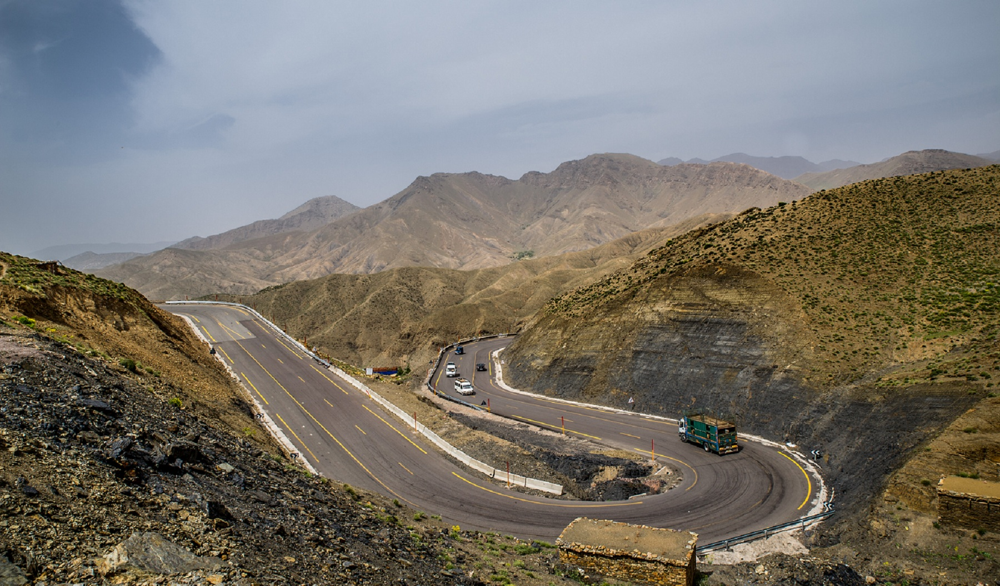
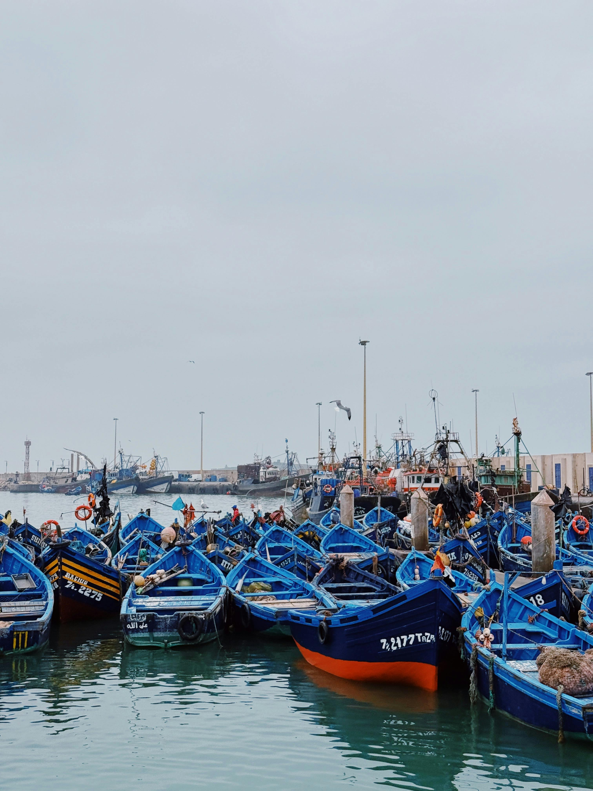
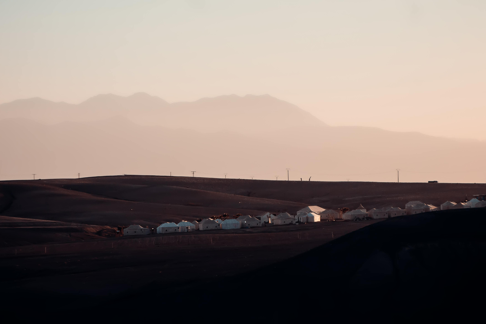

Marrakech, surnommée la "ville ocre", est un point de départ idéal pour explorer les paysages spectaculaires du Maroc. Grâce à un réseau routier bien développé et des destinations variées à proximité, la région offre des possibilités infinies pour les amateurs de roadtrips. Découvrez nos itinéraires préférés pour une aventure inoubliable au volant d'une voiture de location Rakeb.
1. La route de l'Atlas : Marrakech - Ouarzazate
Ce roadtrip emblématique vous emmène à travers le spectaculaire col du Tizi n'Tichka, culminant à 2 260 mètres d'altitude et offrant des panoramas à couper le souffle sur les montagnes de l'Atlas.

La route sinueuse du Tizi n'Tichka offre des vues spectaculaires
Points d'intérêt sur cette route :
- Aït Ben Haddou : Ksar classé au patrimoine mondial de l'UNESCO, célèbre pour avoir servi de décor à de nombreux films, dont Game of Thrones et Gladiator.
- Télouet : Ancienne Kasbah sur l'ancienne route des caravanes.
- Ouarzazate : Connue comme la "porte du désert" et abritant les studios de cinéma Atlas.
Distance : environ 200 km
Durée recommandée : 1-2 jours
Meilleure période : printemps (mars-mai) ou automne (septembre-novembre)
Pour ce trajet, nous recommandons une voiture avec une bonne garde au sol, bien que la route soit entièrement asphaltée. Les virages en épingle peuvent être intimidants pour les conducteurs novices, alors prenez votre temps et profitez des nombreux points de vue panoramiques pour faire des pauses.
2. Escapade côtière : Marrakech - Essaouira
Contrastant avec l'effervescence de Marrakech, Essaouira offre une ambiance plus détendue avec ses plages balayées par le vent, ses remparts historiques et son atmosphère bohème.

Le port pittoresque d'Essaouira et ses célèbres bateaux bleus
À découvrir sur cette route :
- Coopératives d'huile d'argan : Arrêtez-vous pour observer la production traditionnelle et acheter de l'huile authentique.
- Val d'Argan : Vignoble unique dans la région, proposant des dégustations.
- Plage de Sidi Kaouki : Spot prisé des surfeurs, à quelques kilomètres au sud d'Essaouira.
Distance : environ 180 km
Durée recommandée : 1 jour (avec une nuit à Essaouira)
Meilleure période : toute l'année, évitez juillet-août (très fréquenté)
La route vers Essaouira est particulièrement pittoresque, traversant des paysages ruraux et des forêts d'arganiers où vous pourriez apercevoir des chèvres grimpées dans les arbres. C'est un trajet facile sur une route bien entretenue, parfait pour une première expérience de conduite au Maroc.
3. L'oasis de la vallée de l'Ourika
À seulement 30 km de Marrakech, la vallée de l'Ourika est une excursion parfaite pour une journée. Cette vallée verdoyante offre un rafraîchissant contraste avec l'environnement urbain de Marrakech.

Les terrasses et la rivière de la vallée de l'Ourika
Expériences à ne pas manquer :
- Setti Fatma : Petit village berbère et point de départ pour la randonnée des sept cascades.
- Déjeuner au bord de la rivière : De nombreux restaurants proposent des terrasses surplombant l'oued.
- Jardin bio-aromatique de l'Ourika : Découvrez les plantes médicinales locales.
Distance : 60 km aller-retour
Durée recommandée : 1 journée
Meilleure période : printemps pour voir les amandiers en fleurs
La route devient plus étroite à mesure que vous remontez la vallée, mais reste accessible à tous les véhicules. Le week-end, cette destination est très prisée des Marrakchis, donc privilégiez une visite en semaine pour plus de tranquillité.
4. L'aventure désertique : Marrakech - Agafay
Vous n'avez pas le temps d'aller jusqu'au Sahara ? Le désert d'Agafay, à seulement 40 minutes de Marrakech, offre une expérience désertique fascinante avec ses dunes de pierre et ses paysages lunaires.

Les étendues rocheuses du désert d'Agafay avec l'Atlas en arrière-plan
Activités recommandées :
- Balade à dos de chameau : Une expérience incontournable au coucher du soleil.
- Nuit en camp de luxe : Plusieurs camps proposent une expérience glamping avec vue sur l'Atlas.
- Lac Lalla Takerkoust : Parfait pour une pause rafraîchissante en route.
Distance : environ 30 km
Durée recommandée : 1 journée ou 1 nuit
Meilleure période : hors été (trop chaud)
La route vers Agafay est bien balisée et accessible à tout type de véhicule. Pour explorer plus en profondeur le désert, un véhicule 4x4 peut être préférable, mais les principales attractions sont accessibles en voiture standard.
Conseils pratiques pour votre roadtrip
Choix du véhicule
Pour la plupart des itinéraires mentionnés, une voiture compacte ou berline standard sera parfaitement adaptée. Si vous prévoyez de vous aventurer sur des routes plus difficiles ou des pistes, optez pour un SUV ou un 4x4. Rakeb propose une large gamme de véhicules adaptés à tous les types de roadtrips.
Sécurité routière
- Respectez les limitations de vitesse (60 km/h en agglomération, 100 km/h sur les routes nationales).
- Soyez particulièrement vigilant la nuit, car l'éclairage peut être limité.
- Emportez toujours de l'eau en quantité suffisante.
- Téléchargez les cartes Google Maps ou Maps.me pour une utilisation hors ligne.
Meilleure période pour un roadtrip
Le printemps (mars à mai) et l'automne (septembre à novembre) offrent les conditions idéales avec des températures agréables et des paysages verdoyants. L'été peut être extrêmement chaud, surtout à l'intérieur des terres, tandis que l'hiver peut apporter de la neige dans l'Atlas, rendant certains cols temporairement impraticables.
Prêt pour l'aventure?
Avec Rakeb, louez le véhicule idéal pour votre roadtrip marocain auprès de particuliers ou d'agences locales au meilleur prix. Notre application vous permet de choisir parmi une large sélection de véhicules disponibles à Marrakech et partout au Maroc.
Télécharger l'application Rakeb